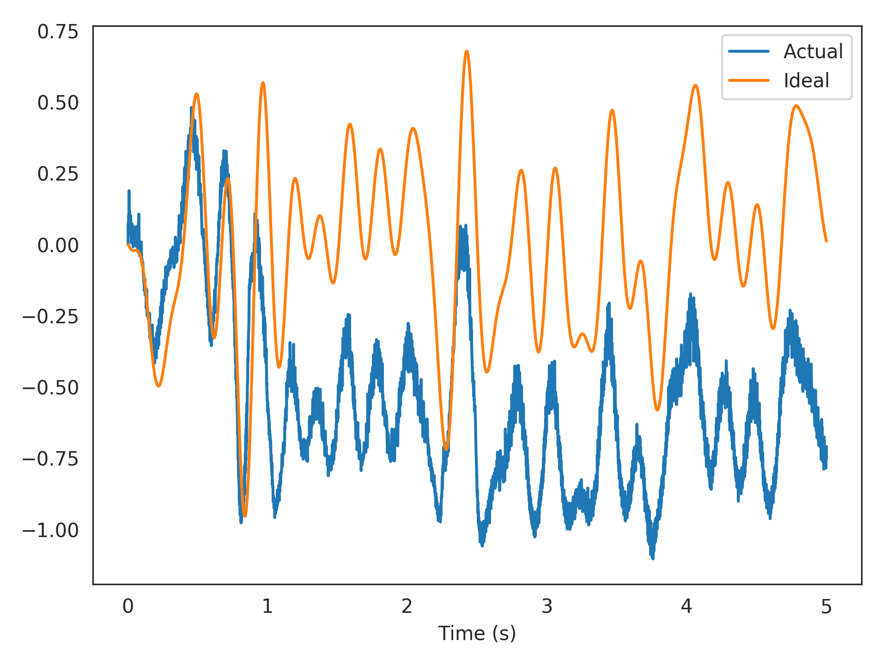

nengolib.solvers.Temporal¶
-
class
nengolib.solvers.Temporal(synapse=Default, solver=Default)[source]¶ Solves for connection weights by accounting for the neural dynamics.
This allows the optimization procedure to potentially harness any correlations in spike-timing between neurons, and/or the adaptative dynamics of more detailed neuron models, given the dynamics of the desired function with respect to the evaluation points. This works by explicitly simulating the neurons given the stimulus, and then learning to decode the desired function in the time-domain.
To use this method, pass it to the
solverparameter for anengo.Connection. Thepreobject on this connection should be anengo.Ensemblethat uses some dynamic neuron model.Parameters: - synapse :
nengo.synapses.Synapse, optional The
nengo.synapses.Synapsemodel used to filter the pre-synaptic activities of the neurons before being passed to the underlying solver. A value ofNonewill bypass any filtering. Defaults to anengo.Lowpassfilter with a time-constant of 5 ms.- solver :
nengo.solvers.Solver, optional The underlying
nengo.solvers.Solverused to solve the problemAD = Y, whereAare the (potentially filtered) neural activities (in response to the evaluation points, over time),Dare the Nengo decoders, andYare the corresponding targets given by thefunctionsupplied to the connection. Defaults tonengo.solvers.LstsqL2.
See also
Notes
Requires
nengo>=2.5.0(specifically, PR #1313).If the neuron model for the pre-synaptic population includes some internal state that varies over time (which it should, otherwise there is little point in using this solver), then the order of the given evaluation points will matter. You will likely want to supply them as an array, rather than as a distribution. Likewise, you may want to filter your desired output, and specify the function as an array on the connection (see example below).
The effect of the solver’s regularization has a very different interpretation in this context (due to the filtered spiking error having its own statistics), and so you may also wish to instantiate the solver yourself with some value other than the default regularization.
Examples
Below we use the temporal solver to learn a filtered communication-channel (the identity function) using 100 low-threshold spiking (LTS) Izhikevich neurons. The training and test data are sampled independently from the same band-limited white-noise process.
>>> from nengolib import Temporal, Network >>> import nengo >>> neuron_type = nengo.Izhikevich(coupling=0.25) >>> tau = 0.005 >>> process = nengo.processes.WhiteSignal(period=5, high=5, y0=0, rms=0.3) >>> eval_points = process.run_steps(5000) >>> with Network() as model: >>> stim = nengo.Node(output=process) >>> x = nengo.Ensemble(100, 1, neuron_type=neuron_type) >>> out = nengo.Node(size_in=1) >>> nengo.Connection(stim, x, synapse=None) >>> nengo.Connection(x, out, synapse=None, >>> eval_points=eval_points, >>> function=nengo.Lowpass(tau).filt(eval_points), >>> solver=Temporal(synapse=tau)) >>> p_actual = nengo.Probe(out, synapse=tau) >>> p_ideal = nengo.Probe(stim, synapse=tau) >>> with nengo.Simulator(model) as sim: >>> sim.run(5)
>>> import matplotlib.pyplot as plt >>> plt.plot(sim.trange(), sim.data[p_actual], label="Actual") >>> plt.plot(sim.trange(), sim.data[p_ideal], label="Ideal") >>> plt.xlabel("Time (s)") >>> plt.legend() >>> plt.show()
Attributes: - solver
- synapse
- weights
A parameter where the value is a boolean.
Methods
__call__(A, Y[, __hack__])Call the solver. mul_encoders(Y, E[, copy])Helper function that projects signal Yonto encodersE.- synapse :